Caso 017 · Barclay & Crousse · 2016 · museo de sitio
Un museo-túmulo: una sola masa baja de muros de tierra apisonada y grava local, con un patio central, abrigada al sur-suroeste por una berma de grava de 2,4 m y abierta a la luz norte, para guardar piezas sensibles a luz, humedad y polvo en un desierto cálido (BWh, oscilación diaria 8-10 °C, vientos de tarde S-SO con arena, lluvia < 10 mm/año). Una planta, cota 0,00, 1.296 m² útiles interiores (1.696 m² de exterior modelado), altura de coronación 4,4 m (6,0 m en la sala temporal; límite 7 m).
El boceto es un peine de barras paralelas expuestas por todos los lados. Cuestiono: (1) el número de piezas (una masa con patio en vez de cinco barras, que dan cinco calles de arena y mucha fachada al sol); (2) la relación interior-exterior (el exterior es un patio abrigado de 16 x 12 m, no las calles entre barras); (3) cómo toca el suelo: no se excava (restos subyacentes, cimentación superficial), el edificio se apoya a nivel y el terreno se modela añadiendo una berma escalonada (0,8 / 1,6 / 2,4 m) al sur y al oeste; (4) el sistema constructivo: muro masivo de tierra en lugar de hormigón o chapa.
| Partido 1 · túmulo con patio (elegido) | Partido 2 · cinco barras elevadas, acero ligero | |
|---|---|---|
| Programa | anillo de salas en bucle vestíbulo-temporal-sala 1-sala 2-patio; depósito al este con carga | 5 accesos que controlar, recorrido a la intemperie |
| Clima | masa y berma: oscilación amortiguada, sin hueco al S ni al O | envolvente expuesta, polvo bajo las barras, sin inercia |
| Accesos | N peatonal y aparcamiento; E servicio | difícil control |
| Normativa | 4,4-6,0 m, color terroso, sin excavar | elevarse choca con la cimentación superficial |
Tres bandas E-O (ejes y = 14, 24, 36, 46; ejes x cada 8 m de 14 a 62). Banda norte: sala temporal (160 m²) y vestíbulo-tienda (160 m²), distribuidor público, aseos (accesible 16 m², mujeres 12 m², hombres 12 m²), administración (48 m² + dirección 16 m² + aseo de personal). Banda media: sala permanente 1 (192 m²), patio (192 m²), conservación-laboratorio (96 m²), muelle (48 m²) e instalaciones-basuras (48 m²). Banda sur: sala permanente 2 (320 m²) y depósito (160 m²). El público entra por el norte y recorre el bucle; las piezas entran por el muelle (este, patio de servicio de 2,4 m de puerta) al laboratorio y al depósito sin cruzar salas.
Demanda: baja 15.000 visitas/año, alta 80.000; elegida 40.000 (fin de semana ≈ 350 visitas/día, ≈ 70 personas en hora punta). Salas permanentes 512 m² (≈ 7 m² por persona de punta), temporal 70 butacas.
Exterior modelado: plaza de acceso (115 m²), parada de autobuses (160 m²), aparcamiento de 16 plazas a 90° (5,0 m de fondo, 13 de 2,5 m y 3 accesibles de 3,6 m junto a la plaza) con calle de maniobra de 7 m abierta al camino de acceso y acera accesible hasta la puerta doble de 2,0 m; patio de servicio y carga con camino de servicio por el este; zanja drenante perimetral al sur y al oeste.
| Exigido | Propuesto | Cumple / desviación |
|---|---|---|
| Plantas, secciones, alzados, detalle, exteriores | P01-P02, S01-S02, S03-S04 (alzados N-S y E-O), D01, U01, U02, V01-V02 | cumple |
| Acceso, recepción, control | vestíbulo-tienda 160 m² con mostrador | cumple |
| Salas permanentes | 2 salas, 512 m² | cumple |
| Sala temporal / usos múltiples | 160 m², paneles perimetrales, 70 butacas retirables | cumple (uso dual: butacas o vitrinas, no a la vez) |
| Depósito, conservación, manipulación; carga separada | 160 + 96 m², muelle 48 m², patio de servicio al E | cumple |
| Administración | 48 + 16 + 16 m² | cumple |
| Aseos públicos | 5 inodoros públicos y accesible para 70 personas de punta | cumple; sin urinarios |
| Instalaciones y mantenimiento | 48 m² + basuras | cumple |
| Superficie 600-1.800 m² | 1.296 m² útiles (≈ 1.450 construidos con muros) | cumple |
| Altura ≤ 7 m, retranqueo ≥ 5 m | 6,0 m máx.; edificio a 14 m del lindero O/S y 14 m al N | cumple |
| Restos subyacentes | sin excavación; solera sobre grava de reparto | cumple |
| Dos salidas desde salas > 100 pers. | sala de 70 pers. con dos salidas igualmente (N directa y vestíbulo) | cumple |
| Itinerario accesible | una planta a cota 0,00, plataforma de terreno a nivel desde el aparcamiento | cumple |
Muros de carga de tierra apisonada estabilizada con grava local, 0,50 m, en perímetro y crujías interiores; cubierta de losa alveolar pretensada de 0,40 m (luz 10-12 m, ≈ L/28) y 0,50 m en la sala temporal. Cargas: muro 0,50 x 4,4 x 20 kN/m³ = 44 kN/m; cubierta con grava y aislante (5 kN/m²) más mantenimiento (1 kN/m²) sobre 5,5 m de ancho tributario = 33 kN/m; total ≈ 80 kN/m. Cimentación superficial: zapata corrida de hormigón de 0,9 m de ancho bajo zócalo de piedra de 0,6 m, a 0,5 m bajo el terreno (σ ≈ 90 kPa, bajo los ≈ 200 kPa supuestos para arena y grava compactadas; a falta de geotecnia). Solera de hormigón de 0,30 m sobre 0,20 m de grava. Voladizo de coronación 0,6 m; alero norte de 2,0 m.
| Elemento | Material | Acabado |
|---|---|---|
| Muros exteriores e interiores de carga | tierra | tierra (tono local) |
| Tabiques de servicios | bloque | enlucido |
| Solera / forjado | hormigón | pavimento de losa o baldosa |
| Cubiertas (7 piezas) | hormigón | grava 40/60 |
| Berma | grava | grava suelta, escalonada |
| Autobús y camión de carga (volúmenes) | vidrio | solo escala |
Agua: suministro por camión cisterna a un cuarto de bombeo en instalaciones (54-62 x 30-36; rotulado BOMBEO en P01), sin almacenamiento enterrado (no se excava). Saneamiento: aseos al noreste con colector hacia el este; tratamiento fuera de parcela de edificación. Pluviales: lluvia casi nula; cubierta con formación de pendiente del 1 % y desagüe libre por el alero mediante tres gárgolas de desagüe (modeladas en el borde de cada cubierta norte); la zanja drenante modelada (1,55 m de ancho, perimetral al S y O) recoge la escorrentía del talud. Electricidad: centro de transformación y cuadro en instalaciones (rotulado TRANSFORMADOR en P01). Ventilación: nocturna cruzada patio-cinta alta y extracción mecánica de aseos con tres conductos de extracción vistos en cubierta (modelados sobre los aseos y el aseo de personal, 0,8 m sobre la cubierta); climatización por salas con control de humedad en el depósito y las salas permanentes.
Cubierta, de arriba abajo: grava 40/60 (6 cm), impermeabilización (1 cm), aislante (8 cm), losa alveolar (40 cm). Muro: tierra apisonada estabilizada (50 cm) con enlucido de barro (2 cm). Suelo: pavimento (4 cm), solera de hormigón (30 cm), grava de reparto (20 cm); zócalo de piedra y zapata corrida bajo el muro.
Masa y berma: inercia para una oscilación de 8-10 °C; sin hueco al sur ni al oeste; cinta alta al norte bajo alero de 2,0 m (el sol solo entra a primera y última hora); patio de 16 x 12 m con sombra de dos árboles; ventilación cruzada nocturna. Terreno: 3 % hacia el norte; se modela una plataforma a cota 0,00 desde el eje y = 30 hasta el camino, de modo que la entrada norte es a nivel y el sur queda retenido por la berma (≈ 0,5 m de desnivel).
Itinerario accesible: plazas accesibles, acera, puerta de 2,0 m, vestíbulo, aseo accesible de círculo 1,50 m; una sola planta sin desniveles. Evacuación: salida directa de la sala temporal (puerta doble de 1,80 m al norte), de la sala 2 (puerta doble de 1,60 m al oeste, a través de la berma abierta 3 m, con zanja interrumpida), vestíbulo (2,0 m), patio de servicio y carga (2,4 m); recorridos máximos < 35 m.
Ronda final de la revisión técnica de la fase 2. 1 Exterior: en P01 cada plaza lleva su recuadro, las 3 accesibles (13 + 3) pictograma PMR y franja de transferencia de 1,10 m, las bocas de la calle de maniobra (7 m) se marcan hacia el camino y la acera de 1,80 m hasta la puerta doble; autobús y camión con ventanillas y ruedas, bombeo y transformador rotulados. 2 P02: tres conductos de extracción y tres gárgolas modelados (también en secciones y alzados). 3 S03: se mantiene; el alzado norte se proyecta mirando al sur, y por eso el volumen alto de 6,0 m (oeste) queda a la derecha; en el alzado sur, mirando al norte, queda a la izquierda: es la proyección correcta. 4 S01, S02, S03 y U02 pasan a escala 1:150 (1:250 U02) en A2; la ocupación de S01-S02 sigue en torno al 20 % porque un corte de 66 x 6 m es una franja muy alargada que no llena un formato apaisado; se justifica por la proporción del edificio. 5 Secciones: más figuras, vitrinas y paneles modelados (volúmenes); las alturas libres se leen en las cotas de nivel (+0,00, +4,40, +6,00; cinta alta a 4,6-5,3 m).
Comprobación: 0 errores, 0 avisos. El resto de avisos de composición (< 60 %) corresponden a un edificio de una sola planta de 50 x 35 m a escala fija; los «textos solapados» de los alzados son los rótulos de las cubiertas contiguas.
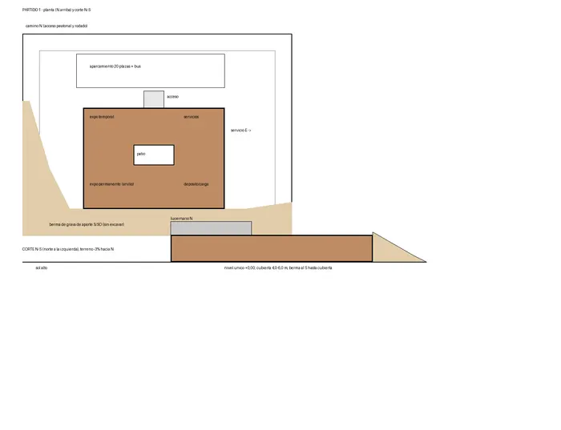
C1 · Croquis 1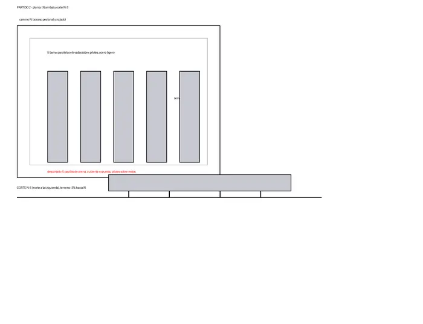
C2 · Croquis 2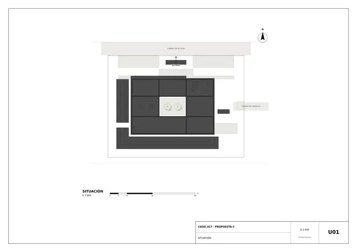
U01 · Situación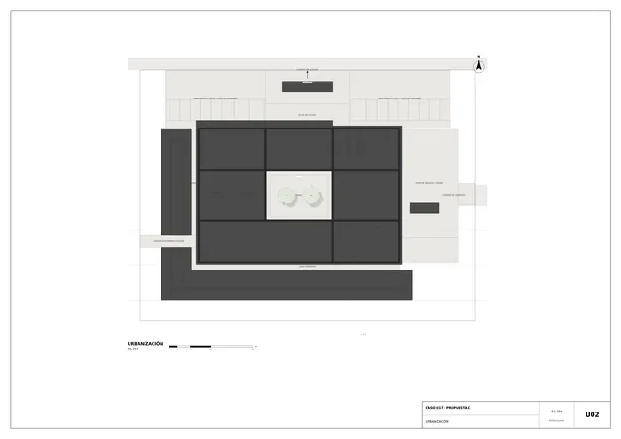
U02 · Urbanización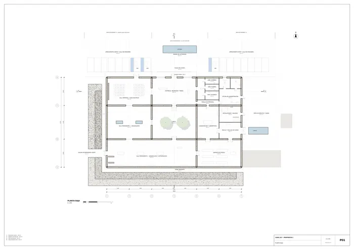
P01 · Planta baja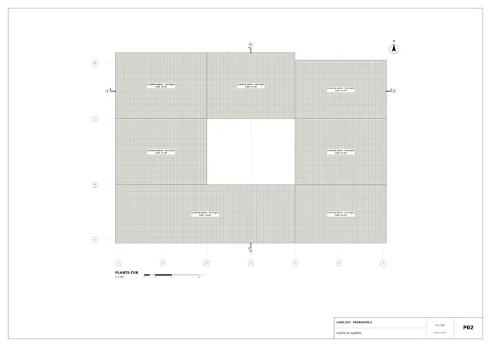
P02 · Planta de cubierta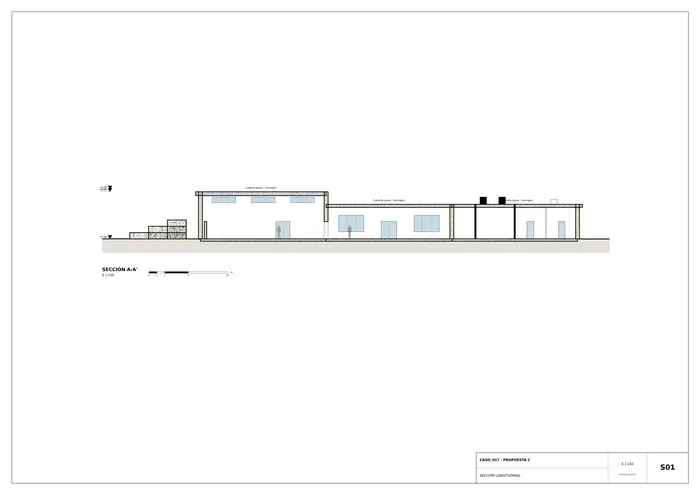
S01 · Sección longitudinal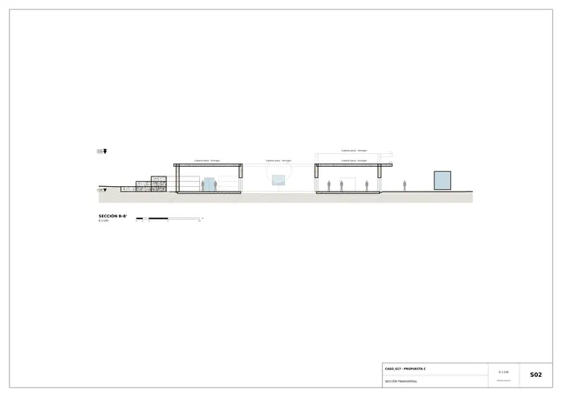
S02 · Sección transversal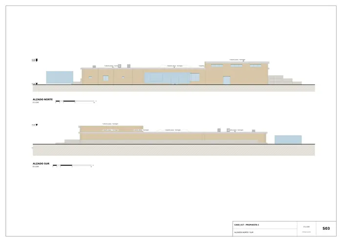
S03 · Alzados norte y sur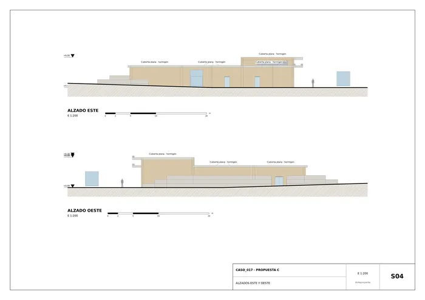
S04 · Alzados este y oeste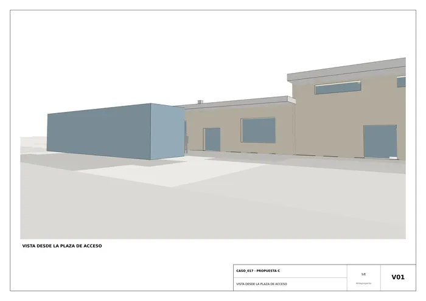
V01 · Vista desde la plaza de acceso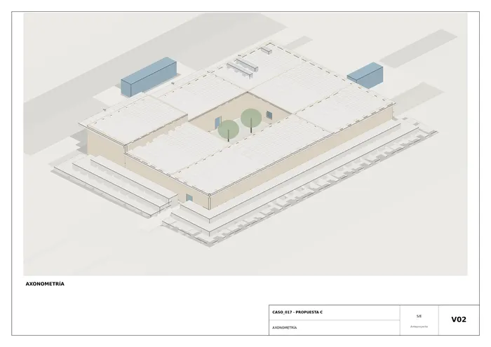
V02 · Axonometría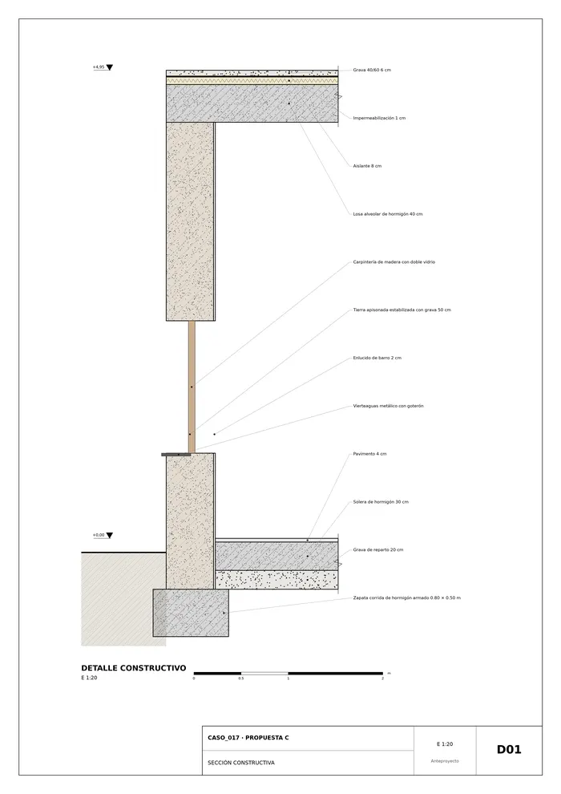
D01 · Sección constructivaMemoria de la propuesta tal como la entregó el sistema. Se han omitido las notas internas del proceso (revisiones, control de reconocimiento y referencias a archivos de trabajo).